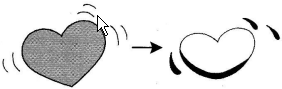

TÂM - Trái tim, tấm lòng, tâm hồn
- kanji :
- 心
- Âm Hán Việt:
- TÂM
- On
- しん
- Kun:
- こころ、～ごころ
|  | Trái tim tôi đang đập My heart beats 心しん臓ぞうが動うごいています。 |
|
| On: しん | Kun: こころ、～ごころ | |
|
|
|
|
||
Từ thường dùng
- 心 （こころ） - TÂM - Tấm lòng, trái tim - Heart.
- 心配する （しんぱいする） - TÂM PHỐI - Lo lắng - to worry. (心配しないでください。： đừng lo)
- 熱心な （ねっしんな） - NHIỆT TÂM - nhiệt tình - Enthusiastic.(Minh 先生はとても熱心です。)
- 中心 （ちゅうしん） - TRUNG TÂM - Center.